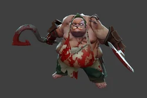

Pudge

Каждый точный бросок знаменитого крюка вселяет страх во врагов Pudge, ведь, притянув жертву, он душит её
ядовитым газом и расчленяет её своим тесаком. С каждым убийством его здоровье и урон увеличиваются, и вскоре
погибель от его рук становится неизбежной.
Что же может делать budge
- Meat Hook
- Бросает окровавленный крюк в указанную цель или в выбранном направлении. Крюк зацепится за первое существо, в которое попадёт, и притащит его к владельцу способности. Вражеские герои получают от крюка урон, а крипы, не являющиеся древними, сразу погибают.
- Rot
- Ядовитое облако, которое замедляет врагов и наносит значительный урон как им, так и владельцу способности.
- Flesh Heap
- Способность гарантированно блокирует часть урона от любых типов атак, а также даёт дополнительную силу за каждого убитого или погибшего поблизости вражеского героя. Эффекты накапливаются с начала игры, но герой получит силу только после изучения способности.
- Dismember
- Герой заживо пожирает врага, оглушая его и нанося периодический урон, который зависит от силы владельца способности и излечивает его. На крипов действует дольше.